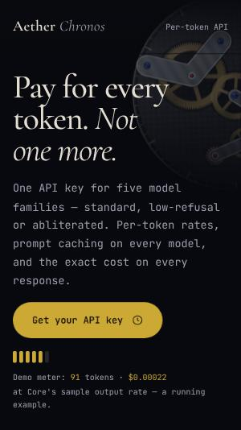

N° 01Dark
Chronos Atelier
“Every token, metered like a chronometer”
60 #090A0F30 #14172210 #D4AF37
- Type
- Cormorant Garamond / JetBrains Mono
- Signature
- Scroll-exploded calibre
Exhibition · 20 directions · one product
Twenty landing pages for one AI platform that sells models, abliterated variants, coding agents and API tokens. One product, twenty visual languages.
20 heading fonts20 accents0 shared signatureschecked at 1440 and 375
Point to magnify a palette · click to inspect
The laws
No two sites share a heading font, an accent colour, a hero structure or a signature scroll mechanic. The build refuses to run if they do.
node awwwards-20-collection/_build/build.mjsnode awwwards-20-collection/serve.mjsnode awwwards-20-collection/_build/verify.cjsRULE 01
H1 at clamp(3.25rem, 6vw, 5rem) with −0.03em tracking. Body 1.05rem at 1.7, never wider than 65ch. No Inter, Roboto, Open Sans, Lato, Arial or system fonts.
RULE 02
Each site is a 60-30-10 system. The accent appears only on calls to action, the active nav item and live data. Contrast is checked against WCAG AA with axe.
RULE 03
Sections breathe at 120px (72px on mobile), blocks sit 64–80px apart, cards pad 36–40px, and a 3.5% grain sits over everything.
RULE 04
Headline, sub, one magnetic CTA, an interactive procedural visual and a concrete trust signal, all above the fold at 1440 × 900 and 375 × 667.
RULE 05
Seven beats: hero, problem with the signature mechanic, benefit bento, a pinned three-step rail, role-based proof, pricing with per-token rates, final CTA.
RULE 06
Vertical-only reveals with 80ms staggers. Spotlight and magnetism on fine pointers only. Transform, opacity, clip-path and filter only; off-screen loops pause; reduced motion unpins.
Fingerprint registry
| Direction | Type pairing | 60 · 30 · 10 | Hero layout | Signature mechanic |
|---|---|---|---|---|
| N° 01 · darkChronos Atelier | Cormorant Garamond JetBrains Mono | #D4AF37 | Asymmetric 5/7 split type column left, live calibre canvas right | Scroll-exploded calibre a pinned canvas lifts five movement layers apart with engineering callouts |
| N° 02 · lightKanso Monolith | Syne IBM Plex Mono | #C83E2B | Slab stack full-width headline slab over a blueprint band, CTA cast into a concrete block | Blueprint-to-structure scrubber linework draws itself, then solidifies into shaded pavilions with a sun-angle shadow slider |
| N° 03 · darkAether Orbital | Unbounded Space Mono | #00F5D4 | HUD corners full-bleed 3D globe, headline top-left, live readouts pinned to the corners | Orbital shell lock-on scroll moves the camera through LEO, MEO and GEO shells while a sticky rail prints avoidance receipts |
| N° 04 · lightVeridian Biofoundry | Fraunces Plus Jakarta Sans | #1B4D3E | Specimen plate centred framed plate with mycelium growing past its borders | Scroll-grown mycelium a branching network grows down the page through nine lab receipts |
| N° 05 · darkValkyrie Hyperacoustics | Funnel Display IBM Plex Mono | #FF5500 | Horizon line headline above a full-width live waveform that splits the viewport, CTA below the line | Playable frequency synthesiser Web Audio tone with bass/mid/treble isolation; scroll drives the waveform phase and sweep |
| N° 06 · darkNocturne Perfumerie | Instrument Serif Work Sans | #E5A93C | Triptych copy column, particle flacon in the centre column, note ledger on the right | Pinned horizontal scent pyramid top, heart and base notes evaporate as particle diffusion |
| N° 07 · darkSolaris Tokamak | Host Grotesk JetBrains Mono | #38BDF8 | Report cover oversized live temperature readout as the visual with the torus overlaid, headline set bottom-left | Scroll-ramped confinement torus plasma heats from 1M to 150M °C, firing net-gain milestones |
| N° 08 · lightTerra Vinicola | Playfair Display Newsreader | #7C1D26 | Centred wine label symmetric crest, headline and terroir line over contour lines | Elevation altimeter a sticky gauge descends 1,200 m to 400 m with soil strata, rainfall and tasting notes per band |
| N° 09 · darkKinetix Exoskeleton | Chakra Petch IBM Plex Mono | #CCFF00 | Telemetry panel full-bleed kinematic rig with copy locked into a framed bottom-left panel | Scroll-bent kinematic leg rig with live joint-torque and metabolic-load readouts |
| N° 10 · darkObelisk ZK | Bricolage Grotesque JetBrains Mono | #A855F7 | Exposed grid cells headline spanning cells above a proof-tree cell block | Cipher decode on entry headings decrypt and a Merkle proof tree verifies leaf by leaf as sections arrive |
| N° 11 · darkNomad Expeditions | DM Serif Display Plus Jakarta Sans | #F59E0B | Depth column vertical gauge strip on the left edge, copy right, sonar field behind | Depth-gauge descent from +4,000 m to −10,928 m with live pressure readouts and sonar pings |
| N° 12 · lightForma Modular | Space Grotesk IBM Plex Mono | #D9381E | Tool-first copy top-left, a live modular configurator occupying the lower-right grid | Snap-together configurator modules spring into a rail as you scroll, plus a before/after room scrubber |
| N° 13 · darkSynapse BCI | Urbanist JetBrains Mono | #2DD4BF | Off-centre float copy in the lower-right third, neural constellation filling the rest | Focus-seeking constellation synaptic pulses fire toward whichever card or CTA is focused or scrolled to |
| N° 14 · darkVeloce Aero | Archivo Black Work Sans | #E11D48 | Streamline band stacked headline over a full-bleed CFD band, drag readout docked right | Scroll-driven CFD streamlines flowing over the frame, with a live CdA comparison slider |
| N° 15 · lightHikari Matcha Guild | Newsreader Plus Jakarta Sans | #2E6F40 | Shoji panels three paper panels that slide apart, copy in the centre panel, vertical tategaki label | Scroll-paced stone mill the granite mill turns with scroll and unlocks farmer provenance certificates |
| N° 16 · lightStratosphere HAPS | Sora IBM Plex Mono | #0284C7 | Sky over instrument band sky canvas fills the upper field, copy and CTA sit in a band of flight-strip readouts | Scroll-pinned flight strips advance along the flight path, plus a wingspan solar-flux calculator |
| N° 17 · darkObsidian Roasters | Gloock JetBrains Mono | #EA580C | Chart-as-hero the live roast curve plotted across the hero, headline set inside the chart area | Scroll-plotted roast profile scroll advances roast time through drying, Maillard, first crack and development |
| N° 18 · darkLumina Photonics | Syncopate Space Mono | #10B981 | Die floorplan the hero is laid out as chip blocks joined by glowing waveguides | Photonic packet routing scroll fires laser packets through logic gates while copper and optical loss are compared live |
| N° 19 · lightAtelier Kintsugi | IM Fell English Work Sans | #B45309 | Open-book spread copy on the left page, manuscript with a live loupe on the right page | Spectral inspection loupe a cursor- and scroll-steered loupe reveals UV, infrared and X-ray layers |
| N° 20 · darkZenith Supersonic | Big Shoulders Display IBM Plex Mono | #F43F5E | Departure board headline and CTA set into a split-flap board above a route arc | Split-flap route board flips city pairs on scroll while a Mach cone sweeps across a route globe |